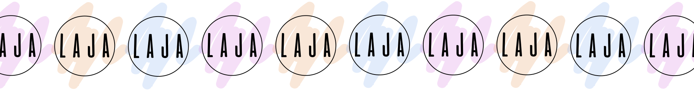

LAUREN JACKMAN
G R A P H I C D E S I G N E R
EDUCATION
- University of Massachusetts Dartmouth
- Commonwealth Honors Student
- Candidate for Bachelor of Fine Arts in Art + Design: Graphic Design
- GPA: 3.9
- Expected: May 2022
SKILLS
- Customer Service
- Problem Solving
- Creativity
- Planning
- Organization
- Adaptability
- Photoshop
- InDesign
- Illustrator
- XD
- Basic HTML + CSS
AWARDS
- Stanley Z. Koplik Certificate of Mastery with Distinction 2018
- Art All-State 2017
- Chancellor's List 2018/2019
LEADERSHIP
2D Design Student Leader
- Sept 2017-May 2018
- Helped to develop interesting course plans to meet the academic, intellectual,
and social needs of students to discuss performance and inspire creativity. Made copies, arranged bulletin boards, and provided supplies for the classroom.
PROFESSIONAL EXPERIENCE
Graphic Design Intern
Cambridge Innovation Institute Needham, MA |
May 2019-August 2019
- Designed various print materials, online ads, presentations, and banners, ensuring that the company's high standards and requirements were met.
- Produced multiple branding tools and collaborated with colleagues on the development and implementation of other marketing collaterals
- Assisted producers and marketers and pro-actively participated in weekly team meetings with department heads.
Seasonal Stylist
Free People Dedham, MA | November 2019-January 2020
- Employed deep knowledge of store goods to direct customers quickly and clearly to items they were seeking.
- Processed transactions and expedited customer checkout
- Received, marked, and checked in merchandise.
- Greeted customers and engaged with them by asking about their needs.
- Extensive cleaning and organizating of store displays
Note Taker
UMass Dartmouth Dartmouth, MA | September 2019-December 2019
- Assisted with note taking for students with learning disabilities.
- Used organization skills to take effective notes that catered to the students'needs.
Hostess Raven's Nest Walpole, MA | January 2016-April 2016
- Maintained professional appearance at all times.
- Scheduled reservations and planned seating arrangements with management prior to dinner service.
- Handled customer complaints with good listening skills and by working with management.
- Cleaned tables and provided customers with any requests.